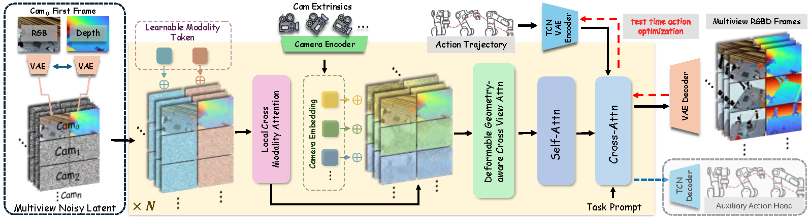
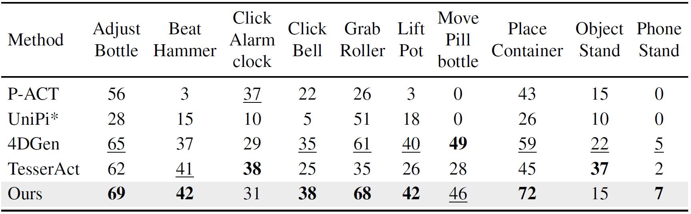
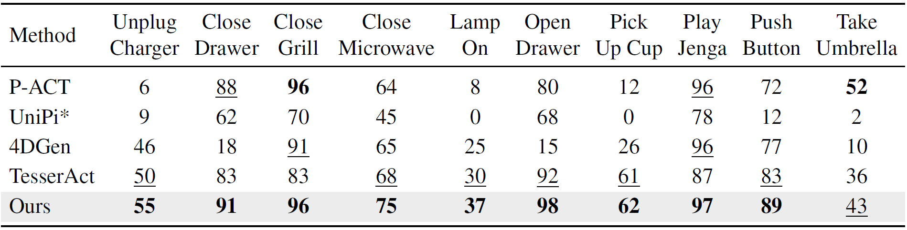
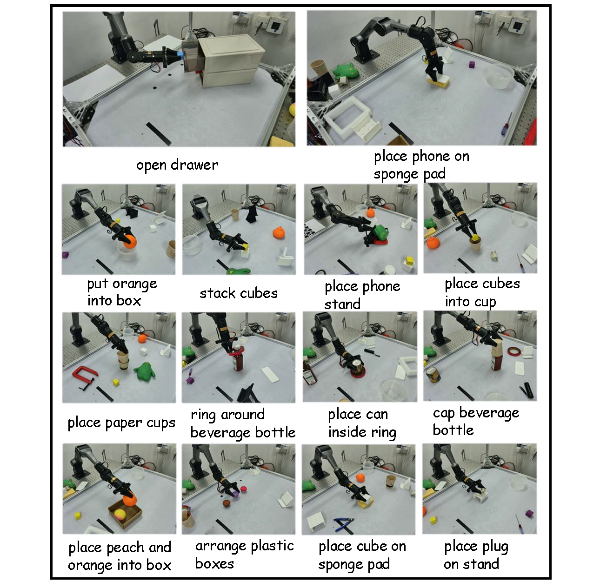

World-model-based imagine-then-act becomes a promising paradigm for robotic manipulation, yet existing approaches typically support either purely image-based forecasting or reasoning over partial 3D geometry, limiting their ability to predict complete 4D scene dynamics.
This work proposes a novel embodied 4D world model that enables geometrically consistent, arbitrary-view RGBD generation: given only a single-view RGBD observation as input, the model "imagines" the remaining viewpoints, which can then be back-projected and fused to assemble a more complete 3D structure across time.
To efficiently learn the multi-view, cross-modality generation, we explicitly design cross-view and cross-modality feature fusion that jointly encourage consistency between RGB and depth and enforce geometric alignment across views. Beyond prediction, converting generated futures into actions is often handled by inverse dynamics, which is ill-posed because multiple actions can explain the same transition. We address this with a test-time action optimization strategy that backpropagates through the generative model to infer a trajectory-level latent best matching the predicted future, and a residual inverse dynamics model that turns this trajectory prior into accurate executable actions.
Experiments on three datasets demonstrate strong performance on both 4D scene generation and downstream manipulation, and ablations provide practical insights into the key design choices.

Qualitative comparisons on RoboTwin, RLBench, and Real-World datasets
Our method achieves the best performance on a majority of tasks and shows particularly strong gains on contact-rich, long-horizon interactions. We obtain the highest success rates on Adjust Bottle (69), Beat Hammer (42), Click Bell (38), Grab Roller (68), Lift Pot (42), and Place Container (72).

Our method consistently delivers the strongest performance across a broad range of task types. It achieves clear gains on relatively coarse, long-horizon interactions such as Close Drawer and Close Microwave (91 and 75), and remains highly robust in cluttered or occluded settings such as Open Drawer (98).

14 manipulation tasks collected in our real-world dataset

@article{wang2026mvista,
title={MVISTA-4D: View-Consistent 4D World Model with Test-Time Action Inference for Robotic Manipulation},
author={Wang, Jiaxu and Jiang, Yicheng and He, Tianlun and Sun, Jingkai and Zhang, Qiang and He, Junhao and Cao, Jiahang and Gan, Zesen and Sun, Mingyuan and Shao, Qiming and others},
journal={arXiv preprint arXiv:2602.09878},
year={2026}
}